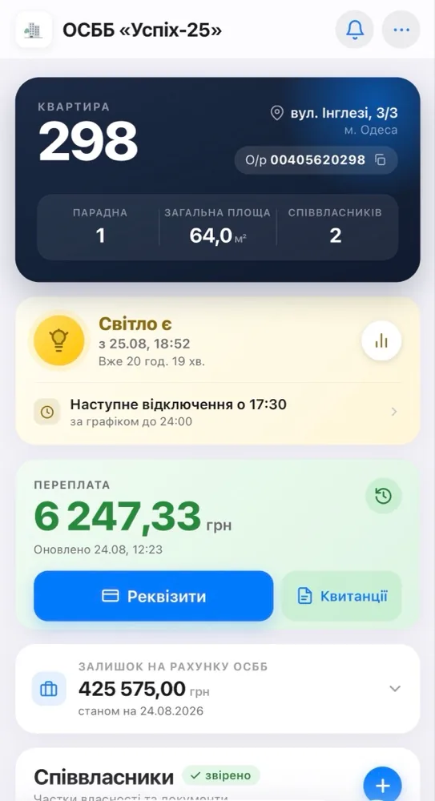
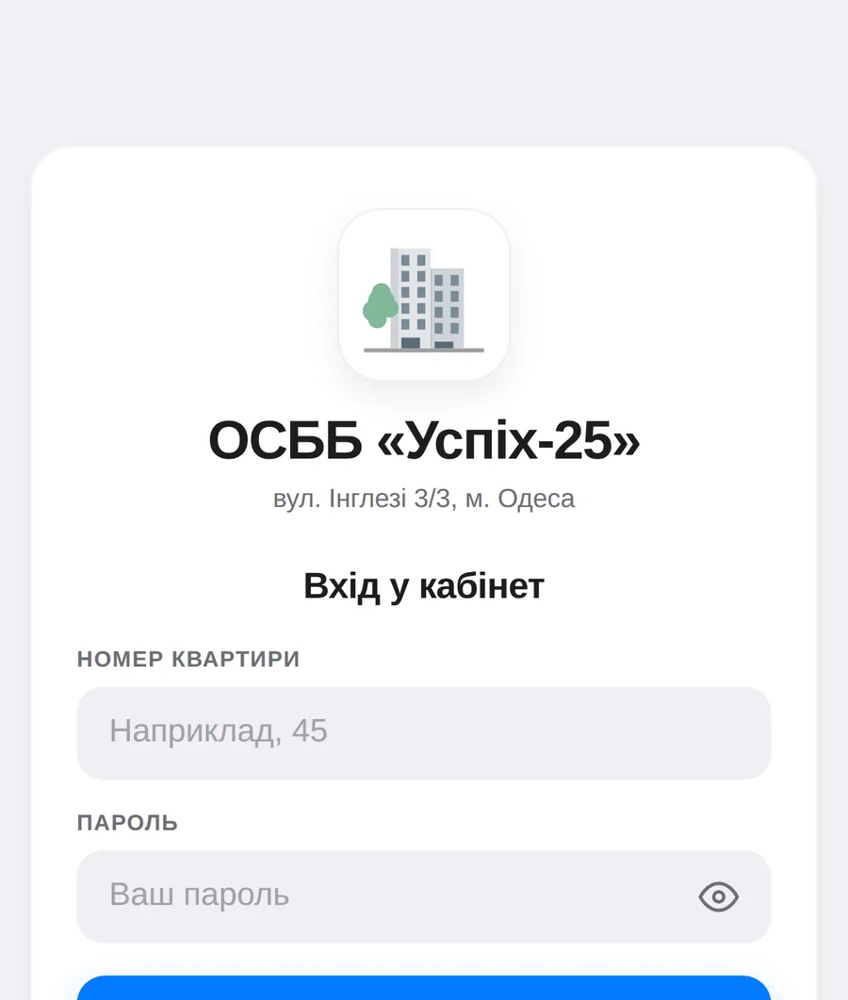

Голосування з кворумом за площею
Правило «1 квартира = 1 голос» закріплене в Firestore Rules, а не в інтерфейсі. Кворум рахується за площею та часткою власності — так, як вимагає закон про ОСББ.
Progressive Web App для об'єднання співвласників: голосування з юридично коректним кворумом, білінг, звернення мешканців і графіки відключень світла — замість паперу, чатів і таблиць.
Управління багатоквартирним будинком тримається на паперових бюлетенях, чатах у месенджерах і таблицях, які веде хтось один. Голосування легко оскаржити, борги видно тільки бухгалтеру, а звернення губляться у стрічці повідомлень.
«Успіх-25» збирає це в один застосунок із двома ролями — мешканець і правління. Він встановлюється на телефон як звичайна програма, працює без мережі й не потребує ані магазину застосунків, ані власного сервера.
Найважливіше рішення архітектури — довіра лежить на сервері, а не на клієнті. Номер квартири береться не з тексту на екрані, а з токена автентифікації, і правила Firestore підтверджують це на кожен запис.
Правило «1 квартира = 1 голос» закріплене в Firestore Rules, а не в інтерфейсі. Кворум рахується за площею та часткою власності — так, як вимагає закон про ОСББ.
Імпорт заборгованостей із CSV власним парсером, звіти про витрати ОСББ, реквізити для оплати й історія нарахувань по кожній квартирі.
Апаратний датчик на базі Android + MacroDroid передає в застосунок реальний стан електропостачання, а Cloud Function щодня знімає графіки відключень із сайту ДТЕК.
Реєстри співвласників вивантажуються у справжній .xlsx. Файл (ZIP + XML) збирається вручну на Typed Arrays — без важких бібліотек і без запиту на сервер.
Мешканець створює звернення з фото, правління бачить чергу зі статусами. Статут, протоколи та акти лежать у спільній базі з переглядачем документів.
Service Worker кешує інтерфейс і розділ питань-відповідей, тож застосунок відкривається без мережі. Жест pull-to-refresh написаний власноруч, щоб поводитись як у нативних застосунках.
Жодного бандлера і жодного кроку збірки: браузер сам вантажить ES-модулі, GitHub Pages роздає статику, Firebase закриває автентифікацію, дані та файли. Уся палітра та типографіка живуть у CSS-змінних одного файлу.
index.html розмітка всіх екранів style.css дизайн-система, усі кольори в :root firestore.rules 297 рядків правил доступу — головний захист sw.js service worker, офлайн-кеш manifest.json встановлення на домашній екран js/ firebase.js ініціалізація + об'єкт сесії app.js вхід, маршрутизація екранів, навігація polls.js голосування, підрахунок кворуму finance.js баланс, витрати, квитанції owners.js співвласники, атомарне збереження requests.js звернення + база документів ОСББ dtek.js графіки відключень power.js статус електропостачання xlsx-write.js власний генератор .xlsx ledger.js журнал операцій ui.js панелі, сповіщення, формати … ще 14 модулів functions/ dtek.js Cloud Function: скрейпер графіків ДТЕК
Натисніть на зображення, щоб відкрити його на весь екран. Стрілки ← → гортають галерею.

